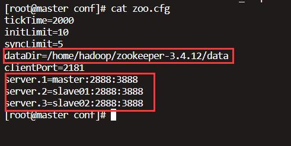

故障处理¶
虚机网络传输异常¶
①问题描述 如果 Broadcom 网络适配器安装在主机中，Windows Server 2008 R2 或 Windows Server 2012 (R2) 服务器上托管的 Hyper-V 虚拟机 (VM) 可能出现网络性能缓慢。如果在虚拟机使用的物理网络适配器上启用虚拟机队列(VMQ)，则可能出现这种情况。
VMQ旨在通过加速网络数据从物理适配器传输至相应虚拟机来提高网络性能，但似乎对某些Broadcom网络适配器产生相反的效果，导致利用受限于受影响适配器的虚拟交换机的所有虚拟机的网络性能显著下降。
已知的解决办法是在受影响的网络适配器上禁用VMQ或更改对应的虚拟交换机的MAC地址。但是，Broadcom可能在编写本文后发布了更新来解决此问题。因此，对此问题进行故障诊断的第一步应是确保Broadcom适配器驱动程序和固件在Hyper-V主机上是最新的。
如果适配器驱动程序和固件都是最新的，而问题仍然存在，则可以将虚拟机绑定到未受影响的网络适配器（如果主机上存在一个）。如果不存在这样的适配器，有两种可能的解决办法：
禁用受影响虚拟交换机或物理网络适配器上的VMQ。 更改所有受影响虚拟交换机的MAC地址。
②禁用VMQ 要禁用虚拟交换机上的VMQ，使用Set-VMNetworkAdapter PowerShell cmdlet，如下所示： Set-VMNetworkAdapter –ManagementOS -Name -VmqWeight 0
要禁用物理网络适配器上的VMQ，取消选中网络适配器属性页的Advanced（高级）选项卡中的相应框。
要更改虚拟交换机的MAC地址，可在Hyper-V Manager中修改它或使用以下 Set-VMNetworkAdapter PowerShell cmdlets之一：
使用静态MAC地址： Set-VMNetworkAdapter –ManagementOS -Name <虚拟网络适配器名称> -StaticMacAddress
使用动态MAC地址： Set-VMNetworkAdapter –ManagementOS -Name <虚拟网络适配器名称> -DynamicMacAddress
采集异常处理¶
①确定使用版本，根据版本进行采集的安装与部署，具体部署方式查看相关章节。
举例：10D版本<——->dcapi-1.2.0.0002.war
②查看数据是否推送到dcapi里面（有数据） 进入到放dcapi的war包目录下，查看dcapi的日志是否有数据上来。 ③无数无推送到的dcapi里面。 分析原因：
（1）现场网关并没有数据传到szkernel里面。
（2）防火墙问题。dcapi所在防火墙没有开通对应端口。
④szkernel推送数据问题。 此处特别注意：推送数据写dcapi所在服务器里面运行的gateway端口并不是dcapi的端口。
此处是填写了dcapi的端口错误现象：
hadoop故障处理¶
hadoop最常见的报错就是由于非正常关机，造成元数据不一致，导致namenode启动失败。
查看hadoop的日志日志（hadoop-root-namenode-master.log），发现报错，如下： 解决办法：
①停止掉主从节点的hadoop服务。
②退出安全模式，默认master节点。命令：hadoop dfsadmin -safemode leave
再次启动hadoop集群，查看元数据是否加载完毕。
③如若再次报错，启动namenode内存不足，可以修改主节点的配置文件。
至此，等待元数据加载完成，具体情况可以查看hadoop-root-namenode-master.log日志。
hbase异常处理¶
①拒绝连接
查看zookeeper的配置文件

（1）查看对应的目录是否存在，若无创建。
（2）查看主机名是否对应。命令：cat /etc/hosts
（3）关闭防火墙
（4）查看主从节点时间是否对应。
②堆内存溢出的问题。
从错误本身可以发现是堆错误，很明显是设置的值太小而导致这样错误。 查看hadoop的配置文件hadoop-evn.sh，将export HADOOP_HEAPSIZE= 注释给弄掉，然后修改为export HADOOP_HEAPSIZE=4000
其它问题处理¶
①war包版本和preprocess预处理版本不一致。
②补录数据。
（1）将补录数据dcrecord的war包以及配置文件放到跑gateway的服务器上。
（2）修改dcrecord包的配置文件。 (3)启动war包，注意端口冲突以及路径问题。
nohup /root/mango/dcrecord/dcrecord-1.0.0.0001.war –server.port=9090 >/dev/null 2>&1 &
（4）登陆web界面查看是否成功。
ip:gateway服务端口/home.html （5）确定需要补录的网关编号，时间。注意：时间在需要补录的时间基础上减8小时。
例如数据中断在13:00，此刻需要从5:00开始补录。
③Hazelcast问题。
（1）在启动芒果所有服务之前，首先启动Hazelcast。
（2）停止Hazelcast，建议使用/bin/stop.sh，查看pid文件是否存在。
④内存过小，启动war包问题。
（1）如果服务器内存过小，此处建议对war包进行内存限制，但registrywar包不可以限制，而且loong和gatewaywar包建议内存给2g，其它war包1g。
（2）使用nohup启动war包时注意要相对路径，使用java -jar启动注意是绝对路径。
nohup /root/mango/uaa/uaa-1.0.2.0005.war –spring.profiles.active=prod &
nohup java -jar -Xmx1g -Xms1g uaa-1.0.2.0005.war > uaa.log &
⑤